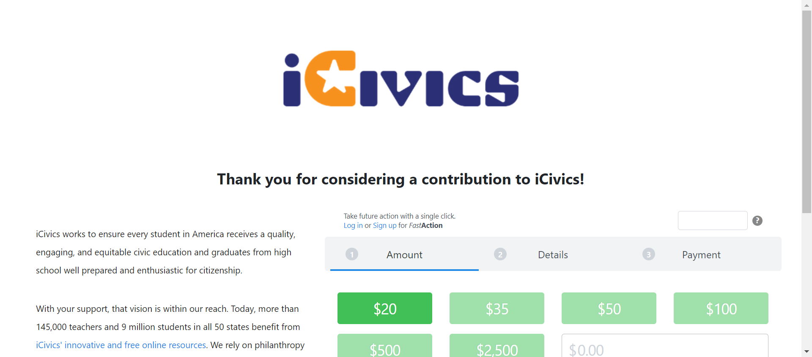
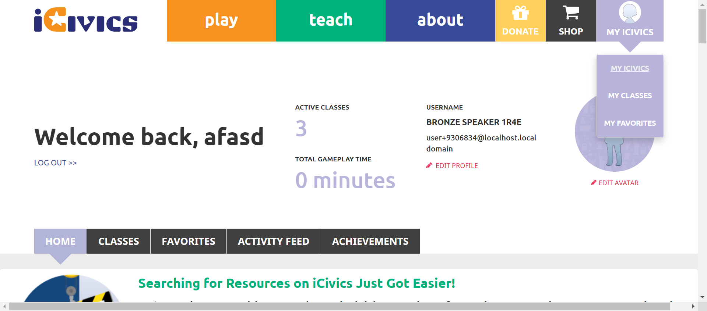

Tests
38 test(s) passed
19 test(s) failed, 0 others
Steps
407 step(s) passed
37 step(s) failed, 0 others
Tests
-
HomepageHeader Jun 10, 2022 01:31:08 PM passJun 10, 2022 01:31:08 PM Jun 10, 2022 01:33:14 PM 0h 2m 6s+0ms
-
C15 - When you select Teach, does a submenu open below the Teach button?
Jun 10, 2022 09:48:54 PM 0h 21m 48s+516ms passStatus Timestamp Details check_circle 1:31:22 PM The Element teach clicked 
check_circle 1:31:22 PM Teachsubmenu display successfully 
-
C16 - Do you see links to Search Our Library, Scope and Sequence, Professional Development, Get Started, Educatory Community, and FAQ in the submenu?
Jun 10, 2022 09:48:54 PM 0h 21m 48s+520ms passStatus Timestamp Details check_circle 1:31:29 PM The Element teach clicked 
check_circle 1:31:29 PM Teachsubmenu display successfully 
-
C17 - When you select a link in the submenu, are you navigated to the appropriate page?
Jun 10, 2022 09:48:54 PM 0h 21m 48s+521ms passStatus Timestamp Details check_circle 1:31:36 PM The mouse over by xpath : (//a[@title='Search Our Library'])[3] is performed. 
check_circle 1:31:37 PM The element [[ChromeDriver: chrome on WINDOWS (631cbe5a7c60180434ef720cff3e1b7f)] -> xpath: (//li[@class='first search our library']/a)[2]] is visible 
check_circle 1:31:37 PM The expected text contains the actual SEARCH OUR LIBRARY 
check_circle 1:31:58 PM The Element SEARCH OUR LIBRARY clicked 
check_circle 1:31:58 PM The expected https://staging.d9.icivics.org/teachers url as same as the https://staging.d9.icivics.org/teachers actual url. 
check_circle 1:31:58 PM The expected text contains the actual CONTENT SEARCH 
check_circle 1:31:58 PM The mouse over by xpath : (//a[@title='Search Our Library'])[3] is performed. 
check_circle 1:31:59 PM The element [[ChromeDriver: chrome on WINDOWS (631cbe5a7c60180434ef720cff3e1b7f)] -> xpath: (//a[@title='Scope and Sequence'])[2]] is visible 
check_circle 1:31:59 PM The expected text contains the actual SCOPE & SEQUENCE 
check_circle 1:32:02 PM The Element SCOPE & SEQUENCE clicked 
check_circle 1:32:03 PM The expected https://staging.d9.icivics.org/user/login?destination=/viewpdf%3Fpath%3D/sites/default/files/Scope%2520%2526%2520Sequence%25205.13.pdf url as same as the https://staging.d9.icivics.org/user/login?destination=/viewpdf%3Fpath%3D/sites/default/files/Scope%2520%2526%2520Sequence%25205.13.pdf actual url. check_circle 1:32:03 PM The expected text contains the actual Log in to iCivics 
check_circle 1:32:03 PM The mouse over by xpath : (//a[@title='Search Our Library'])[3] is performed. check_circle 1:32:03 PM The element [[ChromeDriver: chrome on WINDOWS (631cbe5a7c60180434ef720cff3e1b7f)] -> xpath: (//li[@class='professional development']//a)[2]] is visible 
check_circle 1:32:04 PM The expected text contains the actual PROFESSIONAL DEVELOPMENT 
check_circle 1:32:24 PM The Element PROFESSIONAL DEVELOPMENT clicked 
check_circle 1:32:24 PM The expected https://staging.d9.icivics.org/products/professional-development url as same as the https://staging.d9.icivics.org/products/professional-development actual url. 
check_circle 1:32:24 PM The expected text contains the actual Professional Development 
check_circle 1:32:24 PM The mouse over by xpath : (//a[@title='Search Our Library'])[3] is performed. 
check_circle 1:32:24 PM The element [[ChromeDriver: chrome on WINDOWS (631cbe5a7c60180434ef720cff3e1b7f)] -> xpath: (//li[@class='get started']//a)[2]] is visible 
check_circle 1:32:25 PM The expected text contains the actual GET STARTED 
check_circle 1:32:46 PM The Element GET STARTED clicked 
check_circle 1:32:46 PM The expected https://staging.d9.icivics.org/getstarted url as same as the https://staging.d9.icivics.org/getstarted actual url. 
check_circle 1:32:46 PM The expected text contains the actual Welcome to iCivics! 
check_circle 1:32:47 PM The mouse over by xpath : (//a[@title='Search Our Library'])[3] is performed. 
check_circle 1:32:47 PM The element [[ChromeDriver: chrome on WINDOWS (631cbe5a7c60180434ef720cff3e1b7f)] -> xpath: (//li[@class='educator community']//a)[2]] is visible 
check_circle 1:32:47 PM The expected text contains the actual EDUCATOR COMMUNITY 
check_circle 1:32:53 PM The Element EDUCATOR COMMUNITY clicked 
check_circle 1:32:58 PM The mouse over by xpath : (//a[@title='Search Our Library'])[3] is performed. 
check_circle 1:32:58 PM The element [[ChromeDriver: chrome on WINDOWS (631cbe5a7c60180434ef720cff3e1b7f)] -> xpath: (//li[@class='last faq']//a)[2]] is visible 
check_circle 1:32:59 PM The expected text contains the actual FAQ 
check_circle 1:33:03 PM The Element FAQ clicked 
check_circle 1:33:03 PM The expected https://icivics.zendesk.com/hc/en-us url as same as the https://icivics.zendesk.com/hc/en-us actual url. 
check_circle 1:33:03 PM The expected text contains the actual Getting Started 
check_circle 1:33:03 PM All links in the teach dropdown is verified sucessfully 
-
C20 - When you select Teach again while the submenu is open, does the submenu close?
Jun 10, 2022 09:48:54 PM 0h 21m 48s+535ms passStatus Timestamp Details check_circle 1:33:11 PM The Element teach clicked 
check_circle 1:33:14 PM The Element teach clicked 
-
-
HomepageHeaderplay Jun 10, 2022 02:30:11 PM passJun 10, 2022 02:30:11 PM Jun 10, 2022 02:30:21 PM 0h 0m 10s+0ms
-
C29 - Can you see an appropriate icon for Donate?
Jun 10, 2022 09:48:54 PM 0h 21m 48s+544ms passStatus Timestamp Details check_circle 2:30:21 PM Donatebutton is displayed 
-
-
HomepageHeaderplay Jun 10, 2022 02:39:10 PM passJun 10, 2022 02:39:10 PM Jun 10, 2022 02:39:28 PM 0h 0m 18s+0ms
-
C30 - When you select Donate, are you directed to https://give.icivics.org/?
Jun 10, 2022 09:48:54 PM 0h 21m 48s+554ms passStatus Timestamp Details check_circle 2:39:28 PM The Element DONATE clicked 
-
-
HomepageHeaderplay Jun 10, 2022 02:49:37 PM passJun 10, 2022 02:49:37 PM Jun 10, 2022 02:49:58 PM 0h 0m 21s+0ms
-
C30 - When you select Donate, are you directed to https://give.icivics.org/?
Jun 10, 2022 09:48:54 PM 0h 21m 48s+560ms passStatus Timestamp Details check_circle 2:49:55 PM The Element DONATE clicked 
check_circle 2:49:58 PM Donatebutton is clicked and redirect to corresponding page 
-
-
HomepageHeaderplay Jun 10, 2022 02:52:45 PM passJun 10, 2022 02:52:45 PM Jun 10, 2022 02:53:12 PM 0h 0m 27s+0ms
-
C30 - When you select Donate, are you directed to https://give.icivics.org/?
Jun 10, 2022 09:48:54 PM 0h 21m 47s+564ms passStatus Timestamp Details check_circle 2:53:08 PM The Element DONATE clicked 
check_circle 2:53:12 PM Donatebutton is clicked and redirect to corresponding page 
-
-
HomepageHeaderplay Jun 10, 2022 02:56:09 PM passJun 10, 2022 02:56:09 PM Jun 10, 2022 02:56:31 PM 0h 0m 22s+0ms
-
C30 - When you select Donate, are you directed to https://give.icivics.org/?
Jun 10, 2022 09:48:54 PM 0h 21m 47s+569ms passStatus Timestamp Details check_circle 2:56:27 PM Donatebutton is clicked check_circle 2:56:31 PM Donatebutton is clicked and redirect to corresponding page 
-
-
HomepageHeaderplay Jun 10, 2022 03:07:29 PM passJun 10, 2022 03:07:29 PM Jun 10, 2022 03:08:00 PM 0h 0m 31s+0ms
-
C30 - When you select Donate, are you directed to https://give.icivics.org/?
Jun 10, 2022 09:48:54 PM 0h 21m 47s+573ms passStatus Timestamp Details check_circle 3:07:46 PM Donatebutton is clicked 
check_circle 3:08:00 PM Donatebutton is clicked and redirect to corresponding page 
-
-
HomepageHeaderplay Jun 10, 2022 03:09:29 PM passJun 10, 2022 03:09:29 PM Jun 10, 2022 03:09:53 PM 0h 0m 24s+0ms
-
C30 - When you select Donate, are you directed to https://give.icivics.org/?
Jun 10, 2022 09:48:54 PM 0h 21m 47s+577ms passStatus Timestamp Details check_circle 3:09:42 PM Donatebutton is clicked 
check_circle 3:09:53 PM 'Donatebutton is clicked'https://give.icivics.org/q7Mcn0NUdUylSaBbpfwl4w2?_ga=2.41941611.819457780.1654853979-627603496.1654853979redirect to corresponding page 
-
-
HomepageHeaderplay Jun 10, 2022 03:11:05 PM passJun 10, 2022 03:11:05 PM Jun 10, 2022 03:11:33 PM 0h 0m 28s+0ms
-
C30 - When you select Donate, are you directed to https://give.icivics.org/?
Jun 10, 2022 09:48:54 PM 0h 21m 47s+581ms passStatus Timestamp Details check_circle 3:11:19 PM Donatebutton is clicked 
check_circle 3:11:33 PM 'Donatebutton is clicked'redirect to corresponding pagehttps://give.icivics.org/q7Mcn0NUdUylSaBbpfwl4w2?_ga=2.266512588.356501573.1654854077-2004660013.1654854076 
-
-
HomepageHeaderplay Jun 10, 2022 03:15:35 PM passJun 10, 2022 03:15:35 PM Jun 10, 2022 03:16:07 PM 0h 0m 32s+0ms
-
C31 - Can you see an appropriate icon for Shop?
Jun 10, 2022 09:48:54 PM 0h 21m 47s+585ms passStatus Timestamp Details check_circle 3:16:07 PM Shopbutton Verified successfully 
-
-
HomepageHeaderplay Jun 10, 2022 03:19:40 PM passJun 10, 2022 03:19:40 PM Jun 10, 2022 03:19:54 PM 0h 0m 14s+0ms
-
C32 - When you select Shop, are you directed to https://icivics.myshopify.com/?
Jun 10, 2022 09:48:54 PM 0h 21m 47s+588ms passStatus Timestamp Details check_circle 3:19:50 PM Shopbutton is clicked check_circle 3:19:54 PM 'Shopbutton is clicked'redirect to corresponding pagehttps://icivics.myshopify.com/ 
-
-
HomepageHeaderplay Jun 10, 2022 03:28:52 PM passJun 10, 2022 03:28:52 PM Jun 10, 2022 03:29:01 PM 0h 0m 9s+0ms
-
C33 - If you are not signed in, do you see a Sign In button instead of My iCivics?
Jun 10, 2022 09:48:54 PM 0h 21m 47s+592ms passStatus Timestamp Details check_circle 3:29:01 PM Signinbutton is displayed 
-
-
HomepageHeaderplay Jun 10, 2022 04:20:41 PM passJun 10, 2022 04:20:41 PM Jun 10, 2022 04:21:17 PM 0h 0m 36s+0ms
-
C34 - If you are signed in, do you see a My iCivics button instead of Sign In?
Jun 10, 2022 09:48:54 PM 0h 21m 47s+595ms passStatus Timestamp Details check_circle 4:20:51 PM The Element SIGN IN clicked 
check_circle 4:20:53 PM The Element SIGN IN clicked check_circle 4:21:14 PM The Element LOG IN clicked 
check_circle 4:21:17 PM Myicivicsbutton is displayed instead of signin button 
-
-
HomepageHeaderplay Jun 10, 2022 04:42:49 PM passJun 10, 2022 04:42:49 PM Jun 10, 2022 04:43:26 PM 0h 0m 37s+0ms
-
C34 - If you are signed in, do you see a My iCivics button instead of Sign In?
Jun 10, 2022 09:48:54 PM 0h 21m 47s+599ms passStatus Timestamp Details check_circle 4:42:59 PM The Element SIGN IN clicked 
check_circle 4:43:01 PM The Element SIGN IN clicked 
check_circle 4:43:23 PM The Element LOG IN clicked check_circle 4:43:26 PM Myicivicsbutton is displayed after login instead of signin button 
-
-
HomepageHeaderplay Jun 10, 2022 04:44:22 PM failJun 10, 2022 04:44:22 PM Jun 10, 2022 04:44:54 PM 0h 0m 32s+0ms
-
C29 - Can you see an appropriate icon for Donate?
Jun 10, 2022 09:48:54 PM 0h 21m 47s+604ms passStatus Timestamp Details check_circle 4:44:31 PM Donatebutton is displayed 
-
C30 - When you select Donate, are you directed to https://give.icivics.org/?
Jun 10, 2022 09:48:54 PM 0h 21m 47s+605ms failStatus Timestamp Details check_circle 4:44:38 PM Donatebutton is clicked 
cancel 4:44:38 PM The Element with locator:XPATH&(//a[@title='Donate money to iCivics quickly and easily online.'])[2] Not Found with value: (//a[@title='Donate money to iCivics quickly and easily online.'])[2] 
-
C31 - Can you see an appropriate icon for Shop?
Jun 10, 2022 09:48:54 PM 0h 21m 47s+606ms pass -
C32 - When you select Shop, are you directed to https://icivics.myshopify.com/?
Jun 10, 2022 09:48:54 PM 0h 21m 47s+606ms pass -
C33 - If you are not signed in, do you see a Sign In button instead of My iCivics?
Jun 10, 2022 09:48:54 PM 0h 21m 47s+606ms failStatus Timestamp Details cancel 4:44:45 PM The Element with locator:XPATH&(//a[@title='Sign In'])[3] Not Found with value: (//a[@title='Sign In'])[3] 
-
C34 - If you are signed in, do you see a My iCivics button instead of Sign In?
Jun 10, 2022 09:48:54 PM 0h 21m 47s+607ms pass -
C34 - If you are signed in, do you see a My iCivics button instead of Sign In?
Jun 10, 2022 09:48:54 PM 0h 21m 47s+608ms pass -
C36 - When you select Sign In/My iCivics, does a submenu open below the button?
Jun 10, 2022 09:48:54 PM 0h 21m 47s+608ms pass -
C37 - When you select Sign In, do you see links to Sign In, Register As a Student, Register As A Teacher in the submenu?
Jun 10, 2022 09:48:54 PM 0h 21m 47s+608ms pass -
C38 - If not signed in and you select a link in the submenu, are you navigated to the appropriate page?
Jun 10, 2022 09:48:54 PM 0h 21m 47s+609ms pass
-
-
HomepageHeaderplay Jun 10, 2022 04:45:08 PM passJun 10, 2022 04:45:08 PM Jun 10, 2022 04:45:45 PM 0h 0m 37s+0ms
-
C36 - When you select Sign In/My iCivics, does a submenu open below the button?
Jun 10, 2022 09:48:54 PM 0h 21m 47s+611ms passStatus Timestamp Details check_circle 4:45:17 PM The Element SIGN IN clicked 
check_circle 4:45:19 PM The Element SIGN IN clicked 
check_circle 4:45:39 PM The Element LOG IN clicked check_circle 4:45:45 PM myicivicssubmenu is displayed
-
-
HomepageHeaderplay Jun 10, 2022 04:50:48 PM passJun 10, 2022 04:50:48 PM Jun 10, 2022 04:51:50 PM 0h 1m 2s+0ms
-
C36 - When you select Sign In/My iCivics, does a submenu open below the button?
Jun 10, 2022 09:48:54 PM 0h 21m 47s+615ms passStatus Timestamp Details check_circle 4:51:44 PM The Element LOG IN clicked check_circle 4:51:50 PM myicivics button is clicked and submenu is displayed
-
-
HomepageHeaderplay Jun 10, 2022 05:25:45 PM passJun 10, 2022 05:25:45 PM Jun 10, 2022 05:25:58 PM 0h 0m 13s+0ms
-
C37 - When you select Sign In, do you see links to Sign In, Register As a Student, Register As A Teacher in the submenu?
Jun 10, 2022 09:48:54 PM 0h 21m 47s+618ms passStatus Timestamp Details check_circle 5:25:57 PM signinbutton is clicked and submenu is displayed 
check_circle 5:25:58 PM signinbutton submenu count is3
-
-
HomepageHeaderplay Jun 10, 2022 05:28:01 PM passJun 10, 2022 05:28:01 PM Jun 10, 2022 05:28:11 PM 0h 0m 10s+0ms
-
C37 - When you select Sign In, do you see links to Sign In, Register As a Student, Register As A Teacher in the submenu?
Jun 10, 2022 09:48:54 PM 0h 21m 47s+621ms passStatus Timestamp Details check_circle 5:28:10 PM signinbutton is clicked and submenu is displayed 
check_circle 5:28:11 PM signinbutton submenu count is3 
-
-
HomepageHeaderplay Jun 10, 2022 05:29:13 PM passJun 10, 2022 05:29:13 PM Jun 10, 2022 05:29:22 PM 0h 0m 9s+0ms
-
C37 - When you select Sign In, do you see links to Sign In, Register As a Student, Register As A Teacher in the submenu?
Jun 10, 2022 09:48:54 PM 0h 21m 47s+624ms passStatus Timestamp Details check_circle 5:29:22 PM signinbutton is clicked and submenu is displayed 
check_circle 5:29:22 PM signinbutton submenu count is 3 
-
-
HomepageHeaderplay Jun 10, 2022 05:30:37 PM passJun 10, 2022 05:30:37 PM Jun 10, 2022 05:30:47 PM 0h 0m 10s+0ms
-
C37 - When you select Sign In, do you see links to Sign In, Register As a Student, Register As A Teacher in the submenu?
Jun 10, 2022 09:48:54 PM 0h 21m 47s+626ms passStatus Timestamp Details check_circle 5:30:45 PM signinbutton is clicked and submenu is displayed 
check_circle 5:30:46 PM signinbutton submenu count is 3 
check_circle 5:30:46 PM signinbutton submenu is SIGN IN 
check_circle 5:30:46 PM signinbutton submenu is REGISTER AS A STUDENT 
check_circle 5:30:47 PM signinbutton submenu is REGISTER AS A TEACHER 
-
-
HomepageHeaderplay Jun 10, 2022 06:54:29 PM passJun 10, 2022 06:54:29 PM Jun 10, 2022 06:54:32 PM 0h 0m 3s+0ms
-
C38 - If not signed in and you select a link in the submenu, are you navigated to the appropriate page?
Jun 10, 2022 09:48:54 PM 0h 21m 47s+629ms pass
-
-
HomepageHeaderplay Jun 10, 2022 06:57:09 PM passJun 10, 2022 06:57:09 PM Jun 10, 2022 06:57:11 PM 0h 0m 2s+0ms
-
C38 - If not signed in and you select a link in the submenu, are you navigated to the appropriate page?
Jun 10, 2022 09:48:54 PM 0h 21m 47s+630ms pass
-
-
HomepageHeaderplay Jun 10, 2022 06:57:57 PM failJun 10, 2022 06:57:57 PM Jun 10, 2022 06:58:16 PM 0h 0m 19s+0ms
-
C38 - If not signed in and you select a link in the submenu, are you navigated to the appropriate page?
Jun 10, 2022 09:48:54 PM 0h 21m 47s+633ms failStatus Timestamp Details check_circle 6:58:06 PM The mouse over by xpath : (//a[@title='Sign In']//span)[3] is performed. 
check_circle 6:58:06 PM The element [[ChromeDriver: chrome on WINDOWS (6365b222540c6dcb7a2b80e34b5ad43d)] -> xpath: (//li[@class='first sign in']/a)[2]] is visible 
cancel 6:58:06 PM The expected text doesn't contain the actual Sign In 
check_circle 6:58:09 PM The Element SIGN IN clicked 
check_circle 6:58:09 PM The expected https://staging.d9.icivics.org/user/login url as same as the https://staging.d9.icivics.org/user/login actual url. 
check_circle 6:58:10 PM The mouse over by xpath : (//a[@title='Sign In']//span)[3] is performed. check_circle 6:58:10 PM The element [[ChromeDriver: chrome on WINDOWS (6365b222540c6dcb7a2b80e34b5ad43d)] -> xpath: (//li[@class='register as a student']/a)[2]] is visible 
cancel 6:58:10 PM The expected text doesn't contain the actual Register as a Student 
check_circle 6:58:13 PM The Element REGISTER AS A STUDENT clicked 
check_circle 6:58:13 PM The expected https://staging.d9.icivics.org/user/register?role=student&email=1 url as same as the https://staging.d9.icivics.org/user/register?role=student&email=1 actual url. 
check_circle 6:58:13 PM The mouse over by xpath : (//a[@title='Sign In']//span)[3] is performed. 
check_circle 6:58:13 PM The element [[ChromeDriver: chrome on WINDOWS (6365b222540c6dcb7a2b80e34b5ad43d)] -> xpath: (//li[@class='active active-trail last register as a teacher']/a)[2]] is visible 
cancel 6:58:14 PM The expected text doesn't contain the actual Register as a Teacher check_circle 6:58:16 PM The Element REGISTER AS A TEACHER clicked 
check_circle 6:58:16 PM The expected https://staging.d9.icivics.org/user/register?role=teacher url as same as the https://staging.d9.icivics.org/user/register?role=teacher actual url. 
-
-
HomepageHeaderplay Jun 10, 2022 07:31:26 PM failJun 10, 2022 07:31:26 PM Jun 10, 2022 07:31:47 PM 0h 0m 21s+0ms
-
C38 - If not signed in and you select a link in the submenu, are you navigated to the appropriate page?
Jun 10, 2022 09:48:54 PM 0h 21m 47s+639ms failStatus Timestamp Details check_circle 7:31:38 PM The mouse over by xpath : (//a[@title='Sign In']//span)[3] is performed. 
check_circle 7:31:38 PM The element [[ChromeDriver: chrome on WINDOWS (3b8befccd922c7279e5cc2ca3393c192)] -> xpath: (//li[@class='first sign in']/a)[2]] is visible 
cancel 7:31:38 PM The expected text doesn't contain the actual Sign In 
check_circle 7:31:40 PM The Element SIGN IN clicked 
check_circle 7:31:40 PM The expected https://staging.d9.icivics.org/user/login url as same as the https://staging.d9.icivics.org/user/login actual url. 
check_circle 7:31:41 PM The mouse over by xpath : (//a[@title='Sign In']//span)[3] is performed. 
check_circle 7:31:41 PM The element [[ChromeDriver: chrome on WINDOWS (3b8befccd922c7279e5cc2ca3393c192)] -> xpath: (//li[@class='register as a student']/a)[2]] is visible 
cancel 7:31:41 PM The expected text doesn't contain the actual Register as a Student 
check_circle 7:31:44 PM The Element REGISTER AS A STUDENT clicked 
check_circle 7:31:44 PM The expected https://staging.d9.icivics.org/user/register?role=student&email=1 url as same as the https://staging.d9.icivics.org/user/register?role=student&email=1 actual url. 
check_circle 7:31:44 PM The mouse over by xpath : (//a[@title='Sign In']//span)[3] is performed. check_circle 7:31:44 PM The element [[ChromeDriver: chrome on WINDOWS (3b8befccd922c7279e5cc2ca3393c192)] -> xpath: (//li[@class='active active-trail last register as a teacher']/a)[2]] is visible 
cancel 7:31:45 PM The expected text doesn't contain the actual Register as a Teacher check_circle 7:31:47 PM The Element REGISTER AS A TEACHER clicked 
check_circle 7:31:47 PM The expected https://staging.d9.icivics.org/user/register?role=teacher url as same as the https://staging.d9.icivics.org/user/register?role=teacher actual url. 
-
-
HomepageHeaderplay Jun 10, 2022 07:50:58 PM failJun 10, 2022 07:50:58 PM Jun 10, 2022 07:51:18 PM 0h 0m 20s+0ms
-
C38 - If not signed in and you select a link in the submenu, are you navigated to the appropriate page?
Jun 10, 2022 09:48:54 PM 0h 21m 47s+649ms failStatus Timestamp Details check_circle 7:51:08 PM The mouse over by xpath : (//a[@title='Sign In']//span)[3] is performed. 
check_circle 7:51:08 PM The element [[ChromeDriver: chrome on WINDOWS (dc46ba4fb9cdbdca5ea85eb2139f6490)] -> xpath: (//li[@class='first sign in']/a)[2]] is visible 
cancel 7:51:09 PM The expected text doesn't contain the actual Sign In 
check_circle 7:51:10 PM The Element SIGN IN clicked 
check_circle 7:51:11 PM The expected https://staging.d9.icivics.org/user/login url as same as the https://staging.d9.icivics.org/user/login actual url. 
check_circle 7:51:11 PM The mouse over by xpath : (//a[@title='Sign In']//span)[3] is performed. check_circle 7:51:11 PM The element [[ChromeDriver: chrome on WINDOWS (dc46ba4fb9cdbdca5ea85eb2139f6490)] -> xpath: (//li[@class='register as a student']/a)[2]] is visible 
cancel 7:51:11 PM The expected text doesn't contain the actual Register as a Student 
check_circle 7:51:14 PM The Element REGISTER AS A STUDENT clicked 
check_circle 7:51:14 PM The expected https://staging.d9.icivics.org/user/register?role=student&email=1 url as same as the https://staging.d9.icivics.org/user/register?role=student&email=1 actual url. 
check_circle 7:51:15 PM The mouse over by xpath : (//a[@title='Sign In']//span)[3] is performed. 
check_circle 7:51:15 PM The element [[ChromeDriver: chrome on WINDOWS (dc46ba4fb9cdbdca5ea85eb2139f6490)] -> xpath: (//li[@class='active active-trail last register as a teacher']/a)[2]] is visible 
cancel 7:51:15 PM The expected text doesn't contain the actual Register as a Teacher check_circle 7:51:17 PM The Element REGISTER AS A TEACHER clicked 
check_circle 7:51:18 PM The expected https://staging.d9.icivics.org/user/register?role=teacher url as same as the https://staging.d9.icivics.org/user/register?role=teacher actual url. 
-
-
HomepageHeaderplay Jun 10, 2022 07:56:50 PM failJun 10, 2022 07:56:50 PM Jun 10, 2022 07:57:30 PM 0h 0m 40s+0ms
-
C38 - If not signed in and you select a link in the submenu, are you navigated to the appropriate page?
Jun 10, 2022 09:48:54 PM 0h 21m 47s+653ms failStatus Timestamp Details check_circle 7:57:26 PM The mouse over by xpath : (//a[@title='Sign In']//span)[3] is performed. 
check_circle 7:57:27 PM The element [[ChromeDriver: chrome on WINDOWS (fab7eec7b2901820964efd96ab8e9f14)] -> xpath: (//a[@title='Sign In'])[4]] is visible 
cancel 7:57:27 PM The expected text doesn't contain the actual Sign In 
check_circle 7:57:30 PM The Element SIGN IN clicked check_circle 7:57:30 PM The expected https://staging.d9.icivics.org/user/login url as same as the https://staging.d9.icivics.org/user/login actual url. 
-
-
HomepageHeaderplay Jun 10, 2022 07:58:44 PM failJun 10, 2022 07:58:44 PM Jun 10, 2022 07:59:09 PM 0h 0m 25s+0ms
-
C38 - If not signed in and you select a link in the submenu, are you navigated to the appropriate page?
Jun 10, 2022 09:48:54 PM 0h 21m 47s+656ms failStatus Timestamp Details check_circle 7:58:55 PM The mouse over by xpath : (//a[@title='Sign In']//span)[3] is performed. 
check_circle 7:58:55 PM The element [[ChromeDriver: chrome on WINDOWS (0d8a8a2dd920d67cbf4e41830df7958b)] -> xpath: (//a[@title='Sign In'])[4]] is visible 
cancel 7:58:55 PM The expected text doesn't contain the actual Sign In 
check_circle 7:59:01 PM The Element SIGN IN clicked 
check_circle 7:59:01 PM The expected https://staging.d9.icivics.org/user/login url as same as the https://staging.d9.icivics.org/user/login actual url. 
cancel 7:59:02 PM The expected text doesn't contain the actual Home check_circle 7:59:02 PM The mouse over by xpath : (//a[@title='Sign In']//span)[3] is performed. 
check_circle 7:59:02 PM The element [[ChromeDriver: chrome on WINDOWS (0d8a8a2dd920d67cbf4e41830df7958b)] -> xpath: (//li[@class='register as a student']/a)[2]] is visible 
cancel 7:59:02 PM The expected text doesn't contain the actual Register as a Student 
check_circle 7:59:05 PM The Element REGISTER AS A STUDENT clicked 
check_circle 7:59:06 PM The expected https://staging.d9.icivics.org/user/register?role=student&email=1 url as same as the https://staging.d9.icivics.org/user/register?role=student&email=1 actual url. 
check_circle 7:59:06 PM The mouse over by xpath : (//a[@title='Sign In']//span)[3] is performed. 
check_circle 7:59:06 PM The element [[ChromeDriver: chrome on WINDOWS (0d8a8a2dd920d67cbf4e41830df7958b)] -> xpath: (//li[@class='active active-trail last register as a teacher']/a)[2]] is visible cancel 7:59:06 PM The expected text doesn't contain the actual Register as a Teacher 
check_circle 7:59:09 PM The Element REGISTER AS A TEACHER clicked 
check_circle 7:59:09 PM The expected https://staging.d9.icivics.org/user/register?role=teacher url as same as the https://staging.d9.icivics.org/user/register?role=teacher actual url. 
-
-
HomepageHeaderplay Jun 10, 2022 08:08:03 PM failJun 10, 2022 08:08:03 PM Jun 10, 2022 08:08:25 PM 0h 0m 22s+0ms
-
C38 - If not signed in and you select a link in the submenu, are you navigated to the appropriate page?
Jun 10, 2022 09:48:54 PM 0h 21m 47s+660ms failStatus Timestamp Details check_circle 8:08:14 PM The mouse over by xpath : (//a[@title='Sign In']//span)[3] is performed. 
check_circle 8:08:15 PM The element [[ChromeDriver: chrome on WINDOWS (6f6147064317be449ed136932bb5e103)] -> xpath: (//a[@title='Sign In'])[4]] is visible 
check_circle 8:08:15 PM The expected text contains the actual SIGN IN 
check_circle 8:08:17 PM The Element SIGN IN clicked 
check_circle 8:08:17 PM The expected https://staging.d9.icivics.org/user/login url as same as the https://staging.d9.icivics.org/user/login actual url. 
cancel 8:08:17 PM The expected text doesn't contain the actual Home 
check_circle 8:08:18 PM The mouse over by xpath : (//a[@title='Sign In']//span)[3] is performed. 
check_circle 8:08:18 PM The element [[ChromeDriver: chrome on WINDOWS (6f6147064317be449ed136932bb5e103)] -> xpath: (//li[@class='register as a student']/a)[2]] is visible 
cancel 8:08:18 PM The expected text doesn't contain the actual Register as a Student 
check_circle 8:08:21 PM The Element REGISTER AS A STUDENT clicked 
check_circle 8:08:21 PM The expected https://staging.d9.icivics.org/user/register?role=student&email=1 url as same as the https://staging.d9.icivics.org/user/register?role=student&email=1 actual url. 
check_circle 8:08:21 PM The mouse over by xpath : (//a[@title='Sign In']//span)[3] is performed. 
check_circle 8:08:21 PM The element [[ChromeDriver: chrome on WINDOWS (6f6147064317be449ed136932bb5e103)] -> xpath: (//li[@class='active active-trail last register as a teacher']/a)[2]] is visible cancel 8:08:21 PM The expected text doesn't contain the actual Register as a Teacher 
check_circle 8:08:25 PM The Element REGISTER AS A TEACHER clicked 
check_circle 8:08:25 PM The expected https://staging.d9.icivics.org/user/register?role=teacher url as same as the https://staging.d9.icivics.org/user/register?role=teacher actual url. 
-
-
HomepageHeaderplay Jun 10, 2022 08:15:23 PM failJun 10, 2022 08:15:23 PM Jun 10, 2022 08:15:49 PM 0h 0m 26s+0ms
-
C38 - If not signed in and you select a link in the submenu, are you navigated to the appropriate page?
Jun 10, 2022 09:48:54 PM 0h 21m 47s+667ms failStatus Timestamp Details check_circle 8:15:38 PM The mouse over by xpath : (//a[@title='Sign In']//span)[3] is performed. 
check_circle 8:15:38 PM The element [[ChromeDriver: chrome on WINDOWS (489e459fc5caa74c9dc39de569b7d33d)] -> xpath: (//a[@title='Sign In'])[4]] is visible 
check_circle 8:15:39 PM The expected text contains the actual SIGN IN 
check_circle 8:15:41 PM The Element SIGN IN clicked check_circle 8:15:41 PM The expected https://staging.d9.icivics.org/user/login url as same as the https://staging.d9.icivics.org/user/login actual url. cancel 8:15:42 PM The expected text doesn't contain the actual Educator / Parent Registration 
check_circle 8:15:42 PM The mouse over by xpath : (//a[@title='Sign In']//span)[3] is performed. check_circle 8:15:42 PM The element [[ChromeDriver: chrome on WINDOWS (489e459fc5caa74c9dc39de569b7d33d)] -> xpath: (//li[@class='register as a student']/a)[2]] is visible 
check_circle 8:15:42 PM The expected text contains the actual REGISTER AS A STUDENT 
check_circle 8:15:46 PM The Element REGISTER AS A STUDENT clicked 
check_circle 8:15:46 PM The expected https://staging.d9.icivics.org/user/register?role=student&email=1 url as same as the https://staging.d9.icivics.org/user/register?role=student&email=1 actual url. check_circle 8:15:46 PM The mouse over by xpath : (//a[@title='Sign In']//span)[3] is performed. 
check_circle 8:15:47 PM The element [[ChromeDriver: chrome on WINDOWS (489e459fc5caa74c9dc39de569b7d33d)] -> xpath: (//li[@class='active active-trail last register as a teacher']/a)[2]] is visible 
cancel 8:15:47 PM The expected text doesn't contain the actual Register as a Teacher check_circle 8:15:49 PM The Element REGISTER AS A TEACHER clicked 
check_circle 8:15:49 PM The expected https://staging.d9.icivics.org/user/register?role=teacher url as same as the https://staging.d9.icivics.org/user/register?role=teacher actual url.
-
-
HomepageHeaderplay Jun 10, 2022 08:17:39 PM failJun 10, 2022 08:17:39 PM Jun 10, 2022 08:18:00 PM 0h 0m 21s+0ms
-
C38 - If not signed in and you select a link in the submenu, are you navigated to the appropriate page?
Jun 10, 2022 09:48:54 PM 0h 21m 47s+671ms failStatus Timestamp Details check_circle 8:17:50 PM The mouse over by xpath : (//a[@title='Sign In']//span)[3] is performed. 
check_circle 8:17:50 PM The element [[ChromeDriver: chrome on WINDOWS (31fd3f37ab0dd04efe834cafa00a5319)] -> xpath: (//a[@title='Sign In'])[4]] is visible 
check_circle 8:17:51 PM The expected text contains the actual SIGN IN 
check_circle 8:17:53 PM The Element SIGN IN clicked 
check_circle 8:17:53 PM The expected https://staging.d9.icivics.org/user/login url as same as the https://staging.d9.icivics.org/user/login actual url. 
cancel 8:17:53 PM The expected text doesn't contain the actual Educator / Parent Registration 
check_circle 8:17:53 PM The mouse over by xpath : (//a[@title='Sign In']//span)[3] is performed. check_circle 8:17:54 PM The element [[ChromeDriver: chrome on WINDOWS (31fd3f37ab0dd04efe834cafa00a5319)] -> xpath: (//li[@class='register as a student']/a)[2]] is visible 
check_circle 8:17:54 PM The expected text contains the actual REGISTER AS A STUDENT 
check_circle 8:17:56 PM The Element REGISTER AS A STUDENT clicked 
check_circle 8:17:57 PM The expected https://staging.d9.icivics.org/user/register?role=student&email=1 url as same as the https://staging.d9.icivics.org/user/register?role=student&email=1 actual url. 
check_circle 8:17:57 PM The mouse over by xpath : (//a[@title='Sign In']//span)[3] is performed. check_circle 8:17:57 PM The element [[ChromeDriver: chrome on WINDOWS (31fd3f37ab0dd04efe834cafa00a5319)] -> xpath: (//li[@class='active active-trail last register as a teacher']/a)[2]] is visible 
check_circle 8:17:57 PM The expected text contains the actual REGISTER AS A TEACHER 
check_circle 8:18:00 PM The Element REGISTER AS A TEACHER clicked 
check_circle 8:18:00 PM The expected https://staging.d9.icivics.org/user/register?role=teacher url as same as the https://staging.d9.icivics.org/user/register?role=teacher actual url. 
-
-
HomepageHeaderplay Jun 10, 2022 08:20:26 PM failJun 10, 2022 08:20:26 PM Jun 10, 2022 08:21:10 PM 0h 0m 44s+0ms
-
C38 - If not signed in and you select a link in the submenu, are you navigated to the appropriate page?
Jun 10, 2022 09:48:54 PM 0h 21m 47s+675ms failStatus Timestamp Details check_circle 8:21:00 PM The mouse over by xpath : (//a[@title='Sign In']//span)[3] is performed. 
check_circle 8:21:00 PM The element [[ChromeDriver: chrome on WINDOWS (31d09998cdc0ce169ba0d4f6c3f35d83)] -> xpath: (//a[@title='Sign In'])[4]] is visible 
check_circle 8:21:01 PM The expected text contains the actual SIGN IN 
check_circle 8:21:03 PM The Element SIGN IN clicked 
check_circle 8:21:04 PM The expected https://staging.d9.icivics.org/user/login url as same as the https://staging.d9.icivics.org/user/login actual url. 
cancel 8:21:04 PM The expected text doesn't contain the actual Educator / Parent Registration 
check_circle 8:21:04 PM The mouse over by xpath : (//a[@title='Sign In']//span)[3] is performed. check_circle 8:21:04 PM The element [[ChromeDriver: chrome on WINDOWS (31d09998cdc0ce169ba0d4f6c3f35d83)] -> xpath: (//li[@class='register as a student']/a)[2]] is visible 
check_circle 8:21:04 PM The expected text contains the actual REGISTER AS A STUDENT 
check_circle 8:21:07 PM The Element REGISTER AS A STUDENT clicked 
check_circle 8:21:07 PM The expected https://staging.d9.icivics.org/user/register?role=student&email=1 url as same as the https://staging.d9.icivics.org/user/register?role=student&email=1 actual url. 
check_circle 8:21:07 PM The mouse over by xpath : (//a[@title='Sign In']//span)[3] is performed. 
check_circle 8:21:08 PM The element [[ChromeDriver: chrome on WINDOWS (31d09998cdc0ce169ba0d4f6c3f35d83)] -> xpath: (//li[@class='active active-trail last register as a teacher']/a)[2]] is visible check_circle 8:21:08 PM The expected text contains the actual REGISTER AS A TEACHER 
check_circle 8:21:10 PM The Element REGISTER AS A TEACHER clicked 
check_circle 8:21:10 PM The expected https://staging.d9.icivics.org/user/register?role=teacher url as same as the https://staging.d9.icivics.org/user/register?role=teacher actual url. 
-
-
HomepageHeaderplay Jun 10, 2022 08:23:08 PM passJun 10, 2022 08:23:08 PM Jun 10, 2022 08:23:30 PM 0h 0m 22s+0ms
-
C38 - If not signed in and you select a link in the submenu, are you navigated to the appropriate page?
Jun 10, 2022 09:48:54 PM 0h 21m 47s+680ms passStatus Timestamp Details check_circle 8:23:20 PM The mouse over by xpath : (//a[@title='Sign In']//span)[3] is performed. 
check_circle 8:23:21 PM The element [[ChromeDriver: chrome on WINDOWS (0dd83a62e2c08ca7597588b9a5c42935)] -> xpath: (//a[@title='Sign In'])[4]] is visible 
check_circle 8:23:21 PM The expected text contains the actual SIGN IN 
check_circle 8:23:23 PM The Element SIGN IN clicked check_circle 8:23:23 PM The expected https://staging.d9.icivics.org/user/login url as same as the https://staging.d9.icivics.org/user/login actual url. 
check_circle 8:23:24 PM The mouse over by xpath : (//a[@title='Sign In']//span)[3] is performed. 
check_circle 8:23:24 PM The element [[ChromeDriver: chrome on WINDOWS (0dd83a62e2c08ca7597588b9a5c42935)] -> xpath: (//li[@class='register as a student']/a)[2]] is visible 
check_circle 8:23:24 PM The expected text contains the actual REGISTER AS A STUDENT 
check_circle 8:23:27 PM The Element REGISTER AS A STUDENT clicked 
check_circle 8:23:27 PM The expected https://staging.d9.icivics.org/user/register?role=student&email=1 url as same as the https://staging.d9.icivics.org/user/register?role=student&email=1 actual url. 
check_circle 8:23:27 PM The mouse over by xpath : (//a[@title='Sign In']//span)[3] is performed. 
check_circle 8:23:27 PM The element [[ChromeDriver: chrome on WINDOWS (0dd83a62e2c08ca7597588b9a5c42935)] -> xpath: (//li[@class='active active-trail last register as a teacher']/a)[2]] is visible 
check_circle 8:23:27 PM The expected text contains the actual REGISTER AS A TEACHER check_circle 8:23:30 PM The Element REGISTER AS A TEACHER clicked 
check_circle 8:23:30 PM The expected https://staging.d9.icivics.org/user/register?role=teacher url as same as the https://staging.d9.icivics.org/user/register?role=teacher actual url. 
-
-
HomepageHeaderplay Jun 10, 2022 08:24:56 PM failJun 10, 2022 08:24:56 PM Jun 10, 2022 08:25:13 PM 0h 0m 17s+0ms
-
C38 - If not signed in and you select a link in the submenu, are you navigated to the appropriate page?
Jun 10, 2022 09:48:54 PM 0h 21m 47s+684ms failStatus Timestamp Details check_circle 8:25:05 PM The mouse over by xpath : (//a[@title='Sign In']//span)[3] is performed. 
check_circle 8:25:06 PM The element [[ChromeDriver: chrome on WINDOWS (cf2fb34fbf69a4718d29aff3459f605c)] -> xpath: (//a[@title='Sign In'])[4]] is visible 
check_circle 8:25:06 PM The expected text contains the actual SIGN IN 
check_circle 8:25:09 PM The Element SIGN IN clicked check_circle 8:25:09 PM The expected https://staging.d9.icivics.org/user/login url as same as the https://staging.d9.icivics.org/user/login actual url. cancel 8:25:09 PM The expected text doesn't contain the actual Educator / Parent Registration 
check_circle 8:25:10 PM The mouse over by xpath : (//a[@title='Sign In']//span)[3] is performed. 
check_circle 8:25:10 PM The element [[ChromeDriver: chrome on WINDOWS (cf2fb34fbf69a4718d29aff3459f605c)] -> xpath: (//li[@class='register as a student']/a)[2]] is visible 
check_circle 8:25:10 PM The expected text contains the actual REGISTER AS A STUDENT 
check_circle 8:25:13 PM The Element REGISTER AS A STUDENT clicked 
check_circle 8:25:13 PM The expected https://staging.d9.icivics.org/user/register?role=student&email=1 url as same as the https://staging.d9.icivics.org/user/register?role=student&email=1 actual url. 
-
-
HomepageHeaderplay Jun 10, 2022 08:26:12 PM failJun 10, 2022 08:26:12 PM Jun 10, 2022 08:26:35 PM 0h 0m 23s+0ms
-
C38 - If not signed in and you select a link in the submenu, are you navigated to the appropriate page?
Jun 10, 2022 09:48:54 PM 0h 21m 47s+687ms failStatus Timestamp Details check_circle 8:26:25 PM The mouse over by xpath : (//a[@title='Sign In']//span)[3] is performed. 
check_circle 8:26:26 PM The element [[ChromeDriver: chrome on WINDOWS (276e1f4736e8196b0e589289728a2e95)] -> xpath: (//a[@title='Sign In'])[4]] is visible 
check_circle 8:26:26 PM The expected text contains the actual SIGN IN 
check_circle 8:26:28 PM The Element SIGN IN clicked 
check_circle 8:26:28 PM The expected https://staging.d9.icivics.org/user/login url as same as the https://staging.d9.icivics.org/user/login actual url. 
check_circle 8:26:28 PM The expected text contains the actual Log in to iCivics check_circle 8:26:29 PM The mouse over by xpath : (//a[@title='Sign In']//span)[3] is performed. check_circle 8:26:29 PM The element [[ChromeDriver: chrome on WINDOWS (276e1f4736e8196b0e589289728a2e95)] -> xpath: (//li[@class='register as a student']/a)[2]] is visible 
check_circle 8:26:29 PM The expected text contains the actual REGISTER AS A STUDENT 
check_circle 8:26:32 PM The Element REGISTER AS A STUDENT clicked 
check_circle 8:26:32 PM The expected https://staging.d9.icivics.org/user/register?role=student&email=1 url as same as the https://staging.d9.icivics.org/user/register?role=student&email=1 actual url. 
cancel 8:26:32 PM The expected text doesn't contain the actual Student Registration 
check_circle 8:26:32 PM The mouse over by xpath : (//a[@title='Sign In']//span)[3] is performed. 
check_circle 8:26:33 PM The element [[ChromeDriver: chrome on WINDOWS (276e1f4736e8196b0e589289728a2e95)] -> xpath: (//li[@class='active active-trail last register as a teacher']/a)[2]] is visible 
check_circle 8:26:33 PM The expected text contains the actual REGISTER AS A TEACHER 
check_circle 8:26:35 PM The Element REGISTER AS A TEACHER clicked 
check_circle 8:26:35 PM The expected https://staging.d9.icivics.org/user/register?role=teacher url as same as the https://staging.d9.icivics.org/user/register?role=teacher actual url. 
cancel 8:26:35 PM The expected text doesn't contain the actual Educator / Parent Registration
-
-
HomepageHeaderplay Jun 10, 2022 08:30:09 PM failJun 10, 2022 08:30:09 PM Jun 10, 2022 08:30:31 PM 0h 0m 22s+0ms
-
C38 - If not signed in and you select a link in the submenu, are you navigated to the appropriate page?
Jun 10, 2022 09:48:54 PM 0h 21m 47s+690ms failStatus Timestamp Details check_circle 8:30:21 PM The mouse over by xpath : (//a[@title='Sign In']//span)[3] is performed. 
check_circle 8:30:21 PM The element [[ChromeDriver: chrome on WINDOWS (2f213bbe619bece10d8dc018f54724f2)] -> xpath: (//a[@title='Sign In'])[4]] is visible 
check_circle 8:30:22 PM The expected text contains the actual SIGN IN 
check_circle 8:30:23 PM The Element SIGN IN clicked 
check_circle 8:30:24 PM The expected https://staging.d9.icivics.org/user/login url as same as the https://staging.d9.icivics.org/user/login actual url. 
check_circle 8:30:24 PM The expected text contains the actual Log in to iCivics 
check_circle 8:30:24 PM The mouse over by xpath : (//a[@title='Sign In']//span)[3] is performed. check_circle 8:30:24 PM The element [[ChromeDriver: chrome on WINDOWS (2f213bbe619bece10d8dc018f54724f2)] -> xpath: (//li[@class='register as a student']/a)[2]] is visible 
check_circle 8:30:24 PM The expected text contains the actual REGISTER AS A STUDENT 
check_circle 8:30:27 PM The Element REGISTER AS A STUDENT clicked 
check_circle 8:30:27 PM The expected https://staging.d9.icivics.org/user/register?role=student&email=1 url as same as the https://staging.d9.icivics.org/user/register?role=student&email=1 actual url. 
cancel 8:30:28 PM The expected text doesn't contain the actual Student Registration 
check_circle 8:30:28 PM The mouse over by xpath : (//a[@title='Sign In']//span)[3] is performed. 
check_circle 8:30:28 PM The element [[ChromeDriver: chrome on WINDOWS (2f213bbe619bece10d8dc018f54724f2)] -> xpath: (//li[@class='active active-trail last register as a teacher']/a)[2]] is visible check_circle 8:30:28 PM The expected text contains the actual REGISTER AS A TEACHER 
check_circle 8:30:31 PM The Element REGISTER AS A TEACHER clicked 
check_circle 8:30:31 PM The expected https://staging.d9.icivics.org/user/register?role=teacher url as same as the https://staging.d9.icivics.org/user/register?role=teacher actual url. 
cancel 8:30:31 PM The expected text doesn't contain the actual Educator / Parent Registration
-
-
HomepageHeaderplay Jun 10, 2022 08:31:31 PM failJun 10, 2022 08:31:31 PM Jun 10, 2022 08:31:54 PM 0h 0m 23s+0ms
-
C38 - If not signed in and you select a link in the submenu, are you navigated to the appropriate page?
Jun 10, 2022 09:48:54 PM 0h 21m 47s+694ms failStatus Timestamp Details check_circle 8:31:41 PM The mouse over by xpath : (//a[@title='Sign In']//span)[3] is performed. 
check_circle 8:31:42 PM The element [[ChromeDriver: chrome on WINDOWS (9c5a9bb8831ed6160e0c8a44c48771a5)] -> xpath: (//a[@title='Sign In'])[4]] is visible 
check_circle 8:31:42 PM The expected text contains the actual SIGN IN 
check_circle 8:31:46 PM The Element SIGN IN clicked 
check_circle 8:31:46 PM The expected https://staging.d9.icivics.org/user/login url as same as the https://staging.d9.icivics.org/user/login actual url. 
check_circle 8:31:46 PM The expected text contains the actual Log in to iCivics 
check_circle 8:31:47 PM The mouse over by xpath : (//a[@title='Sign In']//span)[3] is performed. check_circle 8:31:47 PM The element [[ChromeDriver: chrome on WINDOWS (9c5a9bb8831ed6160e0c8a44c48771a5)] -> xpath: (//li[@class='register as a student']/a)[2]] is visible 
check_circle 8:31:47 PM The expected text contains the actual REGISTER AS A STUDENT 
check_circle 8:31:49 PM The Element REGISTER AS A STUDENT clicked 
check_circle 8:31:50 PM The expected https://staging.d9.icivics.org/user/register?role=student&email=1 url as same as the https://staging.d9.icivics.org/user/register?role=student&email=1 actual url. 
cancel 8:31:50 PM The expected text doesn't contain the actual Student Registration 
check_circle 8:31:50 PM The mouse over by xpath : (//a[@title='Sign In']//span)[3] is performed. 
check_circle 8:31:50 PM The element [[ChromeDriver: chrome on WINDOWS (9c5a9bb8831ed6160e0c8a44c48771a5)] -> xpath: (//li[@class='active active-trail last register as a teacher']/a)[2]] is visible 
check_circle 8:31:50 PM The expected text contains the actual REGISTER AS A TEACHER check_circle 8:31:54 PM The Element REGISTER AS A TEACHER clicked 
check_circle 8:31:54 PM The expected https://staging.d9.icivics.org/user/register?role=teacher url as same as the https://staging.d9.icivics.org/user/register?role=teacher actual url. 
cancel 8:31:54 PM The expected text doesn't contain the actual Educator / Parent Registration
-
-
HomepageHeaderplay Jun 10, 2022 08:41:35 PM failJun 10, 2022 08:41:35 PM Jun 10, 2022 08:41:56 PM 0h 0m 21s+0ms
-
C38 - If not signed in and you select a link in the submenu, are you navigated to the appropriate page?
Jun 10, 2022 09:48:54 PM 0h 21m 47s+698ms failStatus Timestamp Details check_circle 8:41:45 PM The mouse over by xpath : (//a[@title='Sign In']//span)[3] is performed. 
check_circle 8:41:46 PM The element [[ChromeDriver: chrome on WINDOWS (3f68753f296df11da1340eba52066da1)] -> xpath: (//a[@title='Sign In'])[4]] is visible 
check_circle 8:41:46 PM The expected text contains the actual SIGN IN 
check_circle 8:41:48 PM The Element SIGN IN clicked 
check_circle 8:41:48 PM The expected https://staging.d9.icivics.org/user/login url as same as the https://staging.d9.icivics.org/user/login actual url. 
check_circle 8:41:48 PM The expected text contains the actual Log in to iCivics check_circle 8:41:49 PM The mouse over by xpath : (//a[@title='Sign In']//span)[3] is performed. check_circle 8:41:49 PM The element [[ChromeDriver: chrome on WINDOWS (3f68753f296df11da1340eba52066da1)] -> xpath: (//li[@class='register as a student']/a)[2]] is visible 
check_circle 8:41:49 PM The expected text contains the actual REGISTER AS A STUDENT 
check_circle 8:41:52 PM The Element REGISTER AS A STUDENT clicked 
check_circle 8:41:52 PM The expected https://staging.d9.icivics.org/user/register?role=student&email=1 url as same as the https://staging.d9.icivics.org/user/register?role=student&email=1 actual url. 
cancel 8:41:52 PM The expected text doesn't contain the actual Student Registration 
check_circle 8:41:53 PM The mouse over by xpath : (//a[@title='Sign In']//span)[3] is performed. check_circle 8:41:53 PM The element [[ChromeDriver: chrome on WINDOWS (3f68753f296df11da1340eba52066da1)] -> xpath: (//li[@class='active active-trail last register as a teacher']/a)[2]] is visible 
check_circle 8:41:53 PM The expected text contains the actual REGISTER AS A TEACHER 
check_circle 8:41:55 PM The Element REGISTER AS A TEACHER clicked 
check_circle 8:41:56 PM The expected https://staging.d9.icivics.org/user/register?role=teacher url as same as the https://staging.d9.icivics.org/user/register?role=teacher actual url. 
cancel 8:41:56 PM The expected text doesn't contain the actual Educator / Parent Registration
-
-
HomepageHeaderplay Jun 10, 2022 08:45:20 PM failJun 10, 2022 08:45:20 PM Jun 10, 2022 08:45:44 PM 0h 0m 24s+0ms
-
C38 - If not signed in and you select a link in the submenu, are you navigated to the appropriate page?
Jun 10, 2022 09:48:54 PM 0h 21m 47s+701ms failStatus Timestamp Details check_circle 8:45:33 PM The mouse over by xpath : (//a[@title='Sign In']//span)[3] is performed. 
check_circle 8:45:33 PM The element [[ChromeDriver: chrome on WINDOWS (78344d17f7f8bfa280c389a7e9a3b9da)] -> xpath: (//a[@title='Sign In'])[4]] is visible 
check_circle 8:45:33 PM The expected text contains the actual SIGN IN 
check_circle 8:45:35 PM The Element SIGN IN clicked 
check_circle 8:45:36 PM The expected https://staging.d9.icivics.org/user/login url as same as the https://staging.d9.icivics.org/user/login actual url. 
check_circle 8:45:36 PM The expected text contains the actual Log in to iCivics 
check_circle 8:45:36 PM The mouse over by xpath : (//a[@title='Sign In']//span)[3] is performed. 
check_circle 8:45:36 PM The element [[ChromeDriver: chrome on WINDOWS (78344d17f7f8bfa280c389a7e9a3b9da)] -> xpath: (//li[@class='register as a student']/a)[2]] is visible 
check_circle 8:45:37 PM The expected text contains the actual REGISTER AS A STUDENT 
check_circle 8:45:40 PM The Element REGISTER AS A STUDENT clicked 
check_circle 8:45:40 PM The expected https://staging.d9.icivics.org/user/register?role=student&email=1 url as same as the https://staging.d9.icivics.org/user/register?role=student&email=1 actual url. cancel 8:45:40 PM The expected text doesn't contain the actual Student Registration check_circle 8:45:40 PM The mouse over by xpath : (//a[@title='Sign In']//span)[3] is performed. 
check_circle 8:45:41 PM The element [[ChromeDriver: chrome on WINDOWS (78344d17f7f8bfa280c389a7e9a3b9da)] -> xpath: (//li[@class='active active-trail last register as a teacher']/a)[2]] is visible 
check_circle 8:45:41 PM The expected text contains the actual REGISTER AS A TEACHER check_circle 8:45:44 PM The Element REGISTER AS A TEACHER clicked 
check_circle 8:45:44 PM The expected https://staging.d9.icivics.org/user/register?role=teacher url as same as the https://staging.d9.icivics.org/user/register?role=teacher actual url. 
cancel 8:45:44 PM The expected text doesn't contain the actual Educator / Parent Registration 
-
-
HomepageHeaderplay Jun 10, 2022 08:48:41 PM failJun 10, 2022 08:48:41 PM Jun 10, 2022 08:49:27 PM 0h 0m 46s+0ms
-
C38 - If not signed in and you select a link in the submenu, are you navigated to the appropriate page?
Jun 10, 2022 09:48:54 PM 0h 21m 47s+704ms failStatus Timestamp Details check_circle 8:49:15 PM The mouse over by xpath : (//a[@title='Sign In']//span)[3] is performed. 
check_circle 8:49:16 PM The element [[ChromeDriver: chrome on WINDOWS (a184dc7c621cbbb5bb01bb29cd02cd83)] -> xpath: (//a[@title='Sign In'])[4]] is visible 
check_circle 8:49:16 PM The expected text contains the actual SIGN IN 
check_circle 8:49:19 PM The Element SIGN IN clicked check_circle 8:49:19 PM The expected https://staging.d9.icivics.org/user/login url as same as the https://staging.d9.icivics.org/user/login actual url. 
check_circle 8:49:19 PM The expected text contains the actual Log in to iCivics 
check_circle 8:49:19 PM The mouse over by xpath : (//a[@title='Sign In']//span)[3] is performed. check_circle 8:49:20 PM The element [[ChromeDriver: chrome on WINDOWS (a184dc7c621cbbb5bb01bb29cd02cd83)] -> xpath: (//li[@class='register as a student']/a)[2]] is visible 
check_circle 8:49:20 PM The expected text contains the actual REGISTER AS A STUDENT 
check_circle 8:49:23 PM The Element REGISTER AS A STUDENT clicked check_circle 8:49:23 PM The expected https://staging.d9.icivics.org/user/register?role=student&email=1 url as same as the https://staging.d9.icivics.org/user/register?role=student&email=1 actual url. 
cancel 8:49:23 PM The expected text doesn't contain the actual Student Registration 
check_circle 8:49:24 PM The mouse over by xpath : (//a[@title='Sign In']//span)[3] is performed. check_circle 8:49:24 PM The element [[ChromeDriver: chrome on WINDOWS (a184dc7c621cbbb5bb01bb29cd02cd83)] -> xpath: (//li[@class='active active-trail last register as a teacher']/a)[2]] is visible 
check_circle 8:49:24 PM The expected text contains the actual REGISTER AS A TEACHER 
check_circle 8:49:27 PM The Element REGISTER AS A TEACHER clicked check_circle 8:49:27 PM The expected https://staging.d9.icivics.org/user/register?role=teacher url as same as the https://staging.d9.icivics.org/user/register?role=teacher actual url. 
cancel 8:49:27 PM The expected text doesn't contain the actual Educator / Parent Registration
-
-
HomepageHeaderplay Jun 10, 2022 08:50:40 PM failJun 10, 2022 08:50:40 PM Jun 10, 2022 08:51:04 PM 0h 0m 24s+0ms
-
C38 - If not signed in and you select a link in the submenu, are you navigated to the appropriate page?
Jun 10, 2022 09:48:54 PM 0h 21m 47s+708ms failStatus Timestamp Details check_circle 8:50:54 PM The mouse over by xpath : (//a[@title='Sign In']//span)[3] is performed. 
check_circle 8:50:55 PM The element [[ChromeDriver: chrome on WINDOWS (9ca156e64a97298bbd4aaddc6a095af4)] -> xpath: (//a[@title='Sign In'])[4]] is visible 
check_circle 8:50:55 PM The expected text contains the actual SIGN IN 
check_circle 8:50:57 PM The Element SIGN IN clicked check_circle 8:50:57 PM The expected https://staging.d9.icivics.org/user/login url as same as the https://staging.d9.icivics.org/user/login actual url. 
check_circle 8:50:57 PM The expected text contains the actual Log in to iCivics check_circle 8:50:58 PM The mouse over by xpath : (//a[@title='Sign In']//span)[3] is performed. 
check_circle 8:50:58 PM The element [[ChromeDriver: chrome on WINDOWS (9ca156e64a97298bbd4aaddc6a095af4)] -> xpath: (//li[@class='register as a student']/a)[2]] is visible 
check_circle 8:50:58 PM The expected text contains the actual REGISTER AS A STUDENT 
check_circle 8:51:00 PM The Element REGISTER AS A STUDENT clicked 
check_circle 8:51:00 PM The expected https://staging.d9.icivics.org/user/register?role=student&email=1 url as same as the https://staging.d9.icivics.org/user/register?role=student&email=1 actual url. 
check_circle 8:51:01 PM The expected text contains the actual Student Registration 
check_circle 8:51:01 PM The mouse over by xpath : (//a[@title='Sign In']//span)[3] is performed. check_circle 8:51:01 PM The element [[ChromeDriver: chrome on WINDOWS (9ca156e64a97298bbd4aaddc6a095af4)] -> xpath: (//li[@class='active active-trail last register as a teacher']/a)[2]] is visible 
check_circle 8:51:01 PM The expected text contains the actual REGISTER AS A TEACHER 
check_circle 8:51:04 PM The Element REGISTER AS A TEACHER clicked 
check_circle 8:51:04 PM The expected https://staging.d9.icivics.org/user/register?role=teacher url as same as the https://staging.d9.icivics.org/user/register?role=teacher actual url. cancel 8:51:04 PM The expected text doesn't contain the actual Educator/Parent Registration
-
-
HomepageHeaderplay Jun 10, 2022 08:52:56 PM passJun 10, 2022 08:52:56 PM Jun 10, 2022 08:53:19 PM 0h 0m 23s+0ms
-
C38 - If not signed in and you select a link in the submenu, are you navigated to the appropriate page?
Jun 10, 2022 09:48:54 PM 0h 21m 47s+712ms passStatus Timestamp Details check_circle 8:53:09 PM The mouse over by xpath : (//a[@title='Sign In']//span)[3] is performed. 
check_circle 8:53:09 PM The element [[ChromeDriver: chrome on WINDOWS (34e2cfd11229f7ba6b19e1ad1a93fcca)] -> xpath: (//a[@title='Sign In'])[4]] is visible 
check_circle 8:53:10 PM The expected text contains the actual SIGN IN 
check_circle 8:53:11 PM The Element SIGN IN clicked check_circle 8:53:11 PM The expected https://staging.d9.icivics.org/user/login url as same as the https://staging.d9.icivics.org/user/login actual url. 
check_circle 8:53:12 PM The expected text contains the actual Log in to iCivics 
check_circle 8:53:12 PM The mouse over by xpath : (//a[@title='Sign In']//span)[3] is performed. check_circle 8:53:12 PM The element [[ChromeDriver: chrome on WINDOWS (34e2cfd11229f7ba6b19e1ad1a93fcca)] -> xpath: (//li[@class='register as a student']/a)[2]] is visible 
check_circle 8:53:12 PM The expected text contains the actual REGISTER AS A STUDENT 
check_circle 8:53:15 PM The Element REGISTER AS A STUDENT clicked 
check_circle 8:53:15 PM The expected https://staging.d9.icivics.org/user/register?role=student&email=1 url as same as the https://staging.d9.icivics.org/user/register?role=student&email=1 actual url. 
check_circle 8:53:15 PM The expected text contains the actual Student Registration 
check_circle 8:53:16 PM The mouse over by xpath : (//a[@title='Sign In']//span)[3] is performed. 
check_circle 8:53:16 PM The element [[ChromeDriver: chrome on WINDOWS (34e2cfd11229f7ba6b19e1ad1a93fcca)] -> xpath: (//li[@class='active active-trail last register as a teacher']/a)[2]] is visible check_circle 8:53:16 PM The expected text contains the actual REGISTER AS A TEACHER 
check_circle 8:53:19 PM The Element REGISTER AS A TEACHER clicked 
check_circle 8:53:19 PM The expected https://staging.d9.icivics.org/user/register?role=teacher url as same as the https://staging.d9.icivics.org/user/register?role=teacher actual url. 
check_circle 8:53:19 PM The expected text contains the actual Educator / Parent Registration
-
-
HomepageHeaderplay Jun 10, 2022 08:55:21 PM passJun 10, 2022 08:55:21 PM Jun 10, 2022 08:55:45 PM 0h 0m 24s+0ms
-
C38 - If not signed in and you select a link in the submenu, are you navigated to the appropriate page?
Jun 10, 2022 09:48:54 PM 0h 21m 47s+716ms passStatus Timestamp Details check_circle 8:55:33 PM The mouse over by xpath : (//a[@title='Sign In']//span)[3] is performed. 
check_circle 8:55:34 PM The element [[ChromeDriver: chrome on WINDOWS (d9cac4f4820d7fb2486a92b73e4d96f4)] -> xpath: (//a[@title='Sign In'])[4]] is visible 
check_circle 8:55:34 PM The expected text contains the actual SIGN IN 
check_circle 8:55:36 PM The Element SIGN IN clicked 
check_circle 8:55:37 PM The expected https://staging.d9.icivics.org/user/login url as same as the https://staging.d9.icivics.org/user/login actual url. 
check_circle 8:55:37 PM The expected text contains the actual Log in to iCivics 
check_circle 8:55:37 PM The mouse over by xpath : (//a[@title='Sign In']//span)[3] is performed. check_circle 8:55:37 PM The element [[ChromeDriver: chrome on WINDOWS (d9cac4f4820d7fb2486a92b73e4d96f4)] -> xpath: (//li[@class='register as a student']/a)[2]] is visible 
check_circle 8:55:38 PM The expected text contains the actual REGISTER AS A STUDENT 
check_circle 8:55:41 PM The Element REGISTER AS A STUDENT clicked 
check_circle 8:55:41 PM The expected https://staging.d9.icivics.org/user/register?role=student&email=1 url as same as the https://staging.d9.icivics.org/user/register?role=student&email=1 actual url. 
check_circle 8:55:41 PM The expected text contains the actual Student Registration 
check_circle 8:55:41 PM The mouse over by xpath : (//a[@title='Sign In']//span)[3] is performed. 
check_circle 8:55:41 PM The element [[ChromeDriver: chrome on WINDOWS (d9cac4f4820d7fb2486a92b73e4d96f4)] -> xpath: (//li[@class='active active-trail last register as a teacher']/a)[2]] is visible check_circle 8:55:42 PM The expected text contains the actual REGISTER AS A TEACHER 
check_circle 8:55:45 PM The Element REGISTER AS A TEACHER clicked 
check_circle 8:55:45 PM The expected https://staging.d9.icivics.org/user/register?role=teacher url as same as the https://staging.d9.icivics.org/user/register?role=teacher actual url. 
check_circle 8:55:45 PM The expected text contains the actual Educator / Parent Registration
-
-
HomepageHeaderplay Jun 10, 2022 09:27:07 PM passJun 10, 2022 09:27:07 PM Jun 10, 2022 09:29:38 PM 0h 2m 31s+0ms
-
C39 - When you select a link in the submenu, are you navigated to the appropriate page?
Jun 10, 2022 09:48:54 PM 0h 19m 16s+718ms passStatus Timestamp Details check_circle 9:27:45 PM The Element LOG IN clicked 
check_circle 9:28:17 PM The mouse over by xpath : (//a[@title='MY ICIVICS'])[2] is performed. 
check_circle 9:28:17 PM The element [[ChromeDriver: chrome on WINDOWS (2b83ef13003ae41420734b3eb7f5f3b3)] -> xpath: (//a[@title='My iCivics'])[2]] is visible 
check_circle 9:28:17 PM The expected text contains the actual MY ICIVICS check_circle 9:28:45 PM The Element MY ICIVICS clicked 
check_circle 9:28:46 PM The expected https://staging.d9.icivics.org/user/9306834 url as same as the https://staging.d9.icivics.org/user/9306834 actual url. 
check_circle 9:28:46 PM The expected text contains the actual Welcome back, 
check_circle 9:28:46 PM The mouse over by xpath : (//a[@title='MY ICIVICS'])[2] is performed. check_circle 9:28:46 PM The element [[ChromeDriver: chrome on WINDOWS (2b83ef13003ae41420734b3eb7f5f3b3)] -> xpath: (//a[@title='My Classes'])[2]] is visible 
check_circle 9:28:47 PM The expected text contains the actual MY CLASSES 
check_circle 9:29:12 PM The Element MY CLASSES clicked 
check_circle 9:29:12 PM The expected https://staging.d9.icivics.org/classes url as same as the https://staging.d9.icivics.org/classes actual url. 
check_circle 9:29:12 PM The expected text contains the actual SYNC CLASSROOM CLASSES 
check_circle 9:29:13 PM The mouse over by xpath : (//a[@title='MY ICIVICS'])[2] is performed. check_circle 9:29:13 PM The element [[ChromeDriver: chrome on WINDOWS (2b83ef13003ae41420734b3eb7f5f3b3)] -> xpath: (//a[@title='My Favorites'])[2]] is visible 
check_circle 9:29:13 PM The expected text contains the actual MY FAVORITES 
check_circle 9:29:38 PM The Element MY FAVORITES clicked 
check_circle 9:29:38 PM The expected https://staging.d9.icivics.org/favorites url as same as the https://staging.d9.icivics.org/favorites actual url. 
check_circle 9:29:38 PM The expected text contains the actual Lessons from Antiquity 
-
-
HomepageHeaderplay Jun 10, 2022 09:48:54 PM passJun 10, 2022 09:48:54 PM Jun 10, 2022 09:51:12 PM 0h 2m 17s+547ms
-
C39 - When you select a link in the submenu, are you navigated to the appropriate page?
Jun 10, 2022 09:51:12 PM 0h 2m 14s+895ms passStatus Timestamp Details check_circle 9:49:28 PM The Element LOG IN clicked check_circle 9:49:57 PM The mouse over by xpath : (//a[@title='MY ICIVICS'])[2] is performed. check_circle 9:49:58 PM The element [[ChromeDriver: chrome on WINDOWS (2da93def3ddaf4f9b859f601b953cde4)] -> xpath: (//a[@title='My iCivics'])[2]] is visible 
check_circle 9:49:58 PM The expected text contains the actual MY ICIVICS 
check_circle 9:50:23 PM The Element MY ICIVICS clicked 
check_circle 9:50:23 PM The expected https://staging.d9.icivics.org/user/9306834 url as same as the https://staging.d9.icivics.org/user/9306834 actual url. 
check_circle 9:50:23 PM The expected text contains the actual Welcome back, 
check_circle 9:50:23 PM The mouse over by xpath : (//a[@title='MY ICIVICS'])[2] is performed. 
check_circle 9:50:23 PM The element [[ChromeDriver: chrome on WINDOWS (2da93def3ddaf4f9b859f601b953cde4)] -> xpath: (//a[@title='My Classes'])[2]] is visible 
check_circle 9:50:24 PM The expected text contains the actual MY CLASSES 
check_circle 9:50:47 PM The Element MY CLASSES clicked 
check_circle 9:50:47 PM The expected https://staging.d9.icivics.org/classes url as same as the https://staging.d9.icivics.org/classes actual url. check_circle 9:50:47 PM The expected text contains the actual SYNC CLASSROOM CLASSES check_circle 9:50:48 PM The mouse over by xpath : (//a[@title='MY ICIVICS'])[2] is performed. 
check_circle 9:50:48 PM The element [[ChromeDriver: chrome on WINDOWS (2da93def3ddaf4f9b859f601b953cde4)] -> xpath: (//a[@title='My Favorites'])[2]] is visible 
check_circle 9:50:48 PM The expected text contains the actual MY FAVORITES 
check_circle 9:51:12 PM The Element MY FAVORITES clicked check_circle 9:51:12 PM The expected https://staging.d9.icivics.org/favorites url as same as the https://staging.d9.icivics.org/favorites actual url. 
check_circle 9:51:12 PM The expected text contains the actual Lessons from Antiquity 
-
info_outline
check_circle
cancel
cancel
error
warning
redo
clear
Dashboard
Tests
57
Steps
444
Start
Jun 10, 2022 09:48:54 PM
End
Jun 10, 2022 09:51:12 PM
Time Taken
0h 2m 18s+749ms